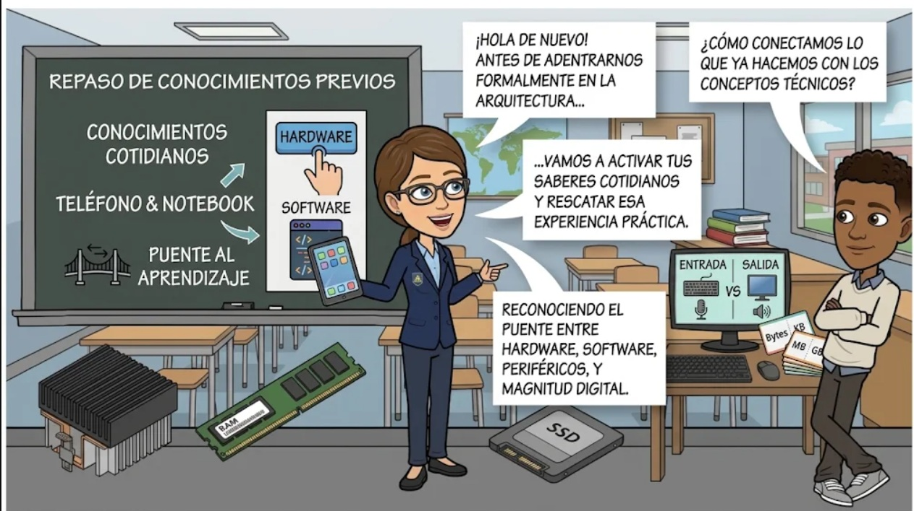

Repaso de Conceptos
Antes de adentrarnos en la arquitectura interna de la computadora y el funcionamiento de sus componentes, vamos a detenernos a observar lo que ya sabes hacer. Cada vez que envías un audio, descargas una aplicación o guardas un trabajo en tu teléfono o notebook, estás tomando decisiones técnicas de forma intuitiva.
🎯 Propósito de este espacio Rescatar esa experiencia cotidiana como usuario y transformarla en el punto de partida para construir los conceptos técnicos del módulo.
Para comenzar a poner en juego tus ideas previas, te invitamos a reflexionar sobre tres situaciones habituales:
Lo tangible y lo intangible
Cuando usas un dispositivo, ¿qué partes puedes tocar y qué cosas ocurren "por dentro" sin que puedas agarrarlas?
El viaje de la información
¿Qué herramientas usas para darle órdenes a la computadora y por dónde te devuelve ella los resultados?
El peso de lo digital
Cuando el teléfono te avisa que "queda poco espacio", ¿qué criterios usas para saber qué archivos ocupan más lugar que otros?

Conectando la experiencia cotidiana con el conocimiento técnico.
Diagnóstico
Para activar estas ideas previas, te proponemos resolver la siguiente actividad de Verdadero o Falso. No busca medir cuánto sabes de memoria; su único fin es que puedas confrontar tus intuiciones cotidianas con el funcionamiento real de los equipos.
Actividad de Diagnóstico
00:00: